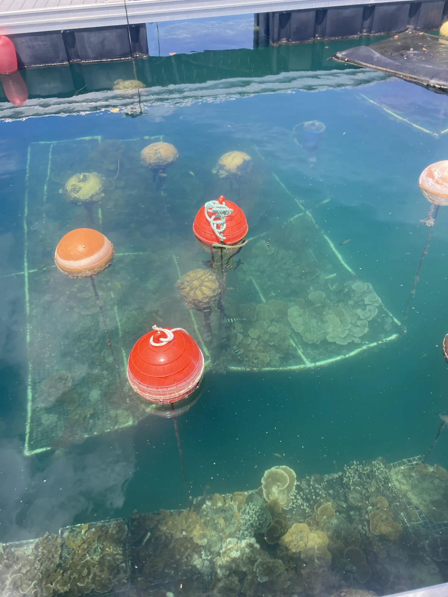
Pathfinders / Taiwan → Hawaiʻi
Beyond
the shore.
Coral, conservation, and learning
to look at the world differently.
01 / Across the Pacific
A question
takes flight.
An independently prepared proposal.
A learning journey from Taiwan to Moku o Loʻe.
Coastlines: Natural Earth. Illustrative route, not a flight itinerary.
How the journey began
I independently prepared my application and proposal for the Taiwan Global Pathfinders Initiative Program (青年百億海外圓夢基金計畫). Approximately NT$280,000 in government funding supported preparatory learning in Taiwan and the completed overseas program. This was field learning and participation, rather than original conservation research.
02 / NMMBA · Taiwan
Look closely.
Start asking.
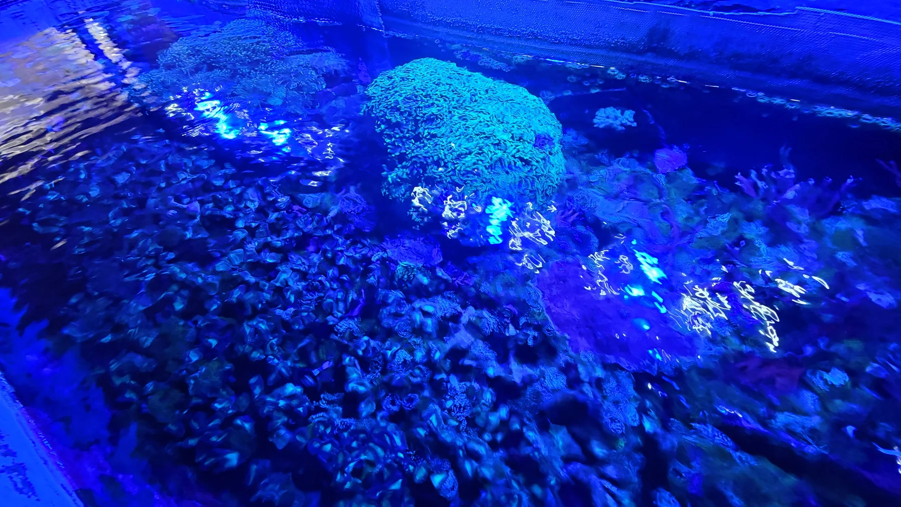
Before the island,
learn the ecosystem.
Coral identification, marine ecology, bleaching, restoration, and the methods behind careful observation.
Prepare → Identify → Observe03 / HIMB · Moku o Loʻe
The classroom
opens up.

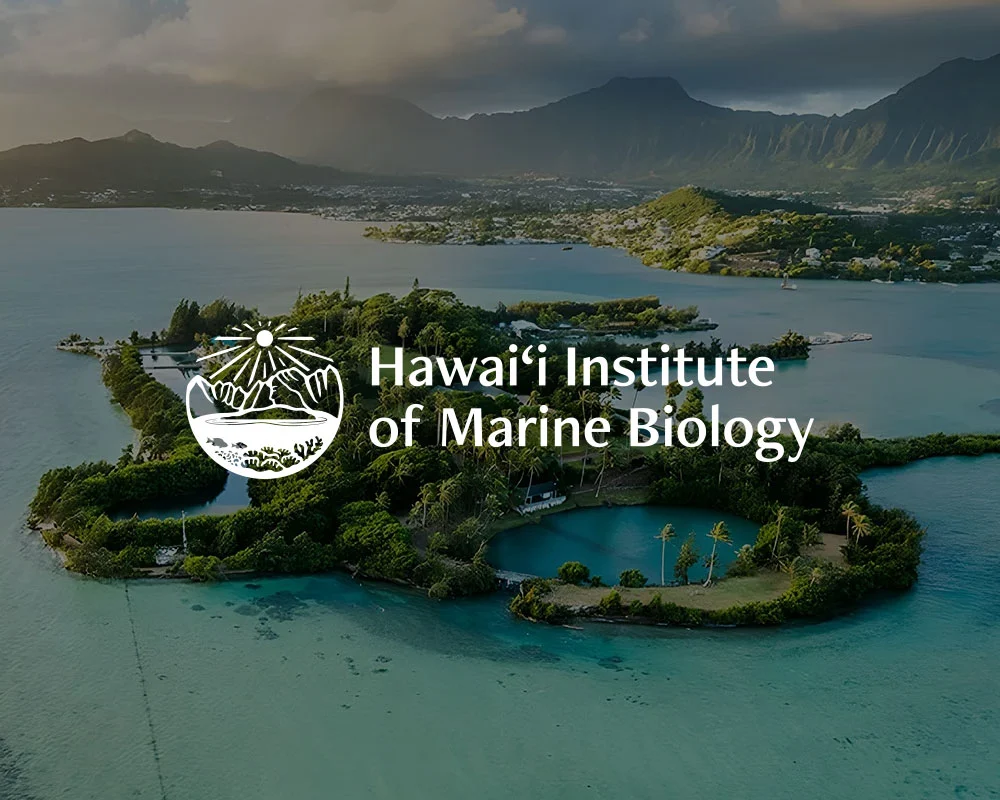
Care.
Coral nursery learning, health observation, and monitoring methods.
Map.
Exposure to SfM, 3D models, GIS / R, and aerial monitoring concepts.
Interpret.
Learning how imagery, ReefCloud, and computer vision can support conservation.
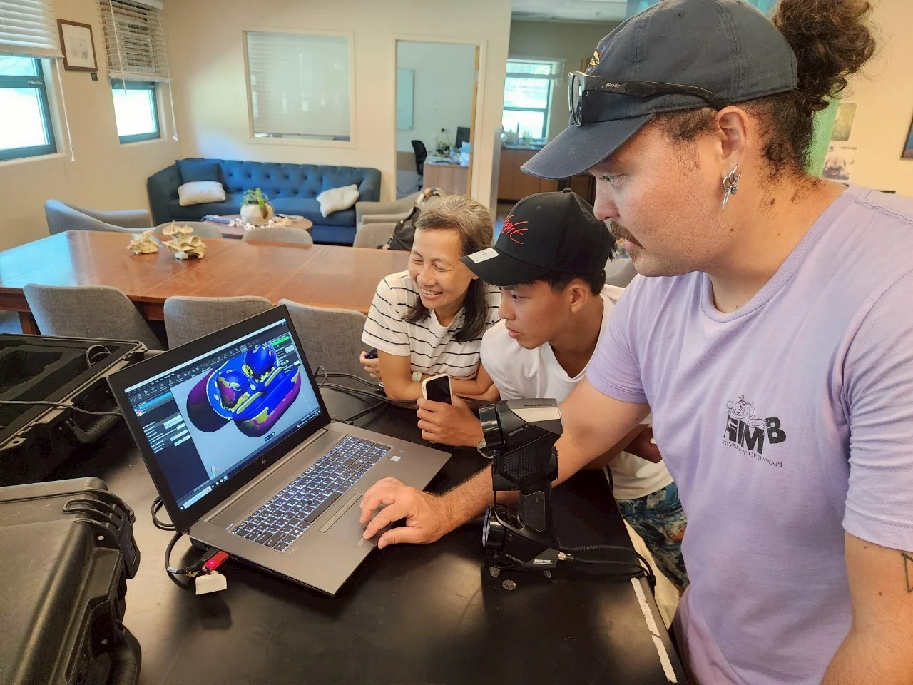

04 / Below the surface
A different
perspective.

Seeing the marine environment from within it.
I also earned PADI Open Water Diver certification.
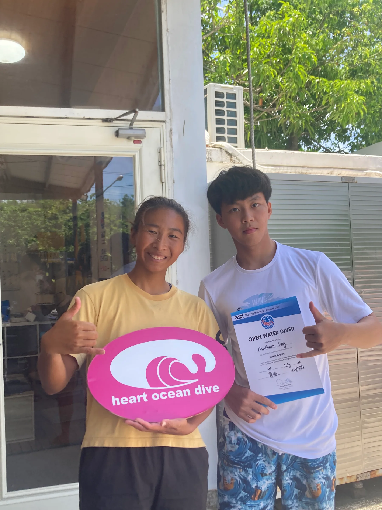
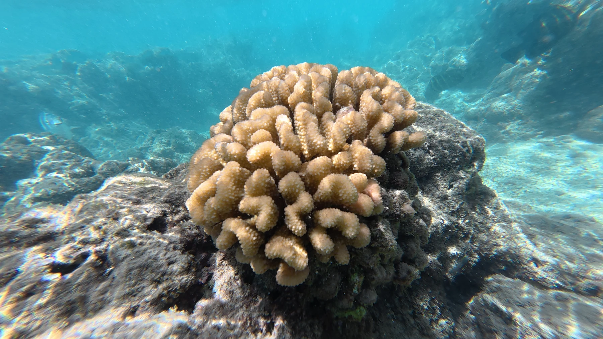
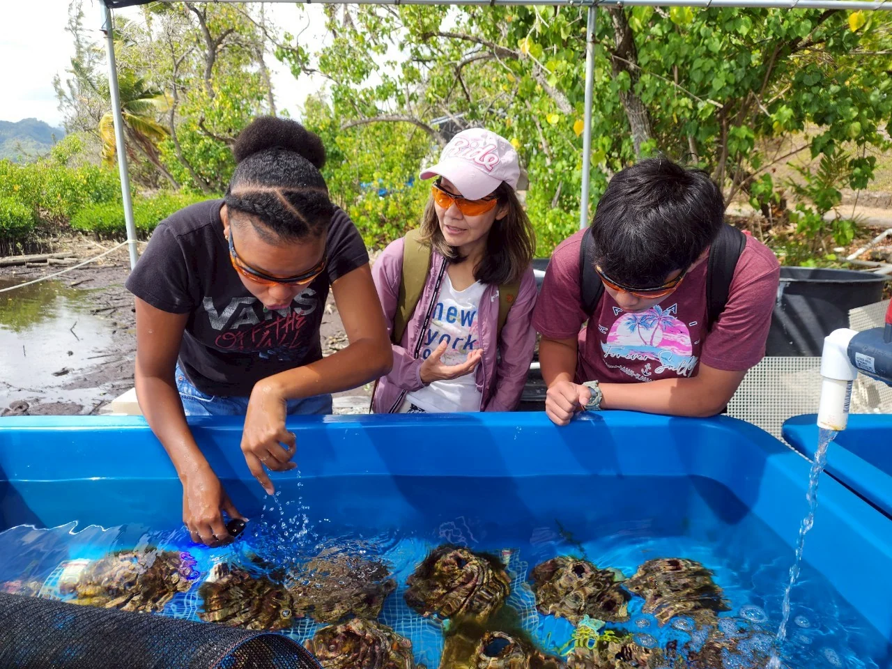
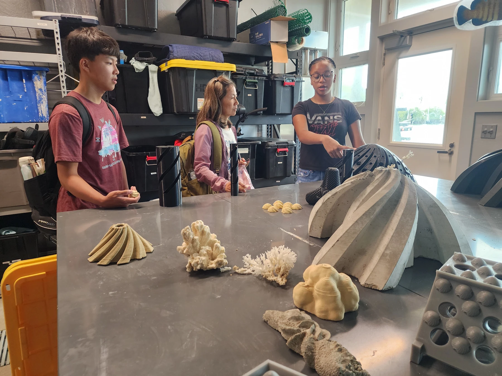
05 / Back above the surface
Conservation
is a conversation.
Lectures and organizations at the
Hawaiʻi Conservation Conference.
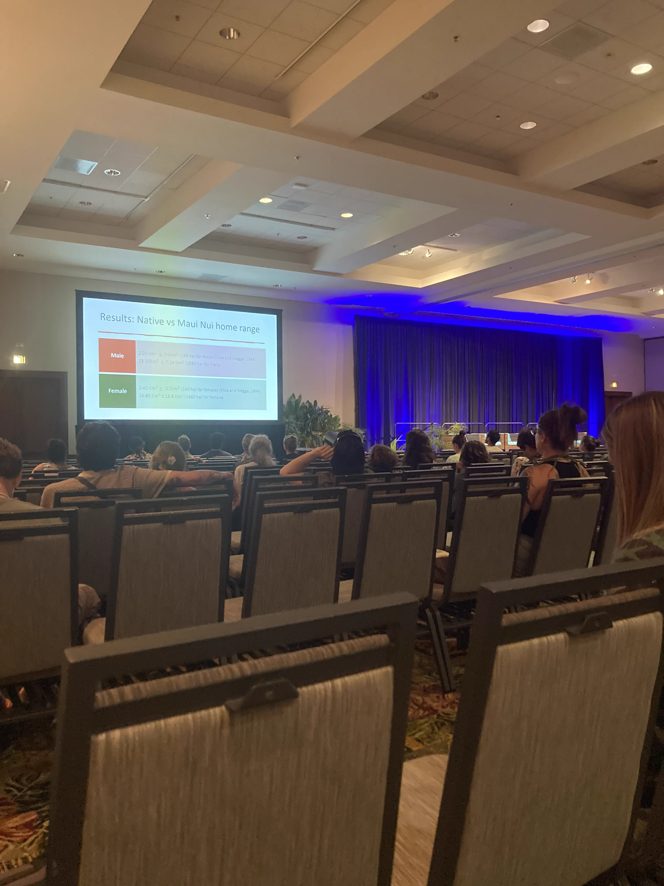
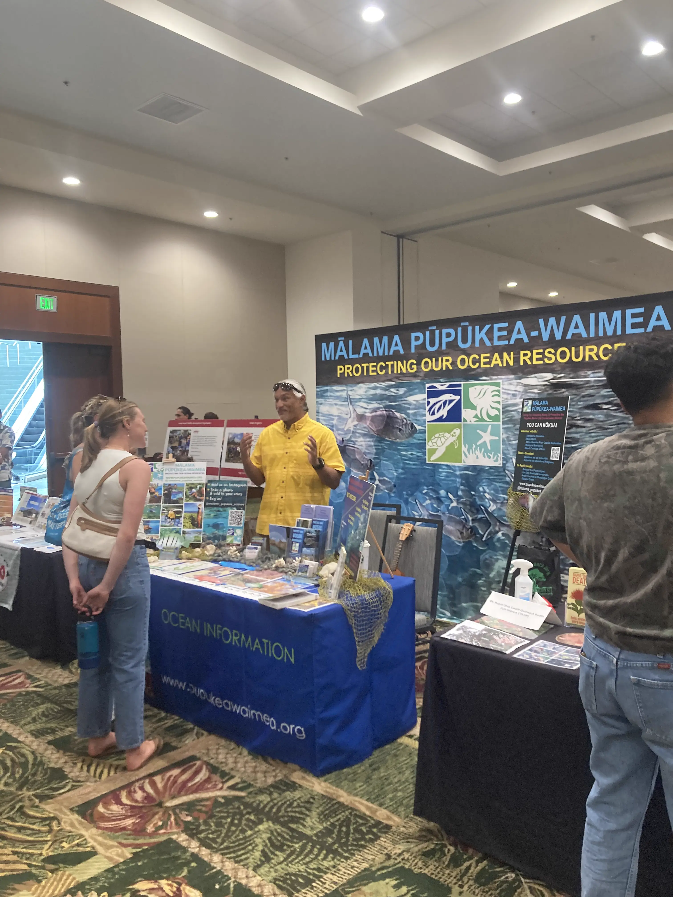
More from the field notebook
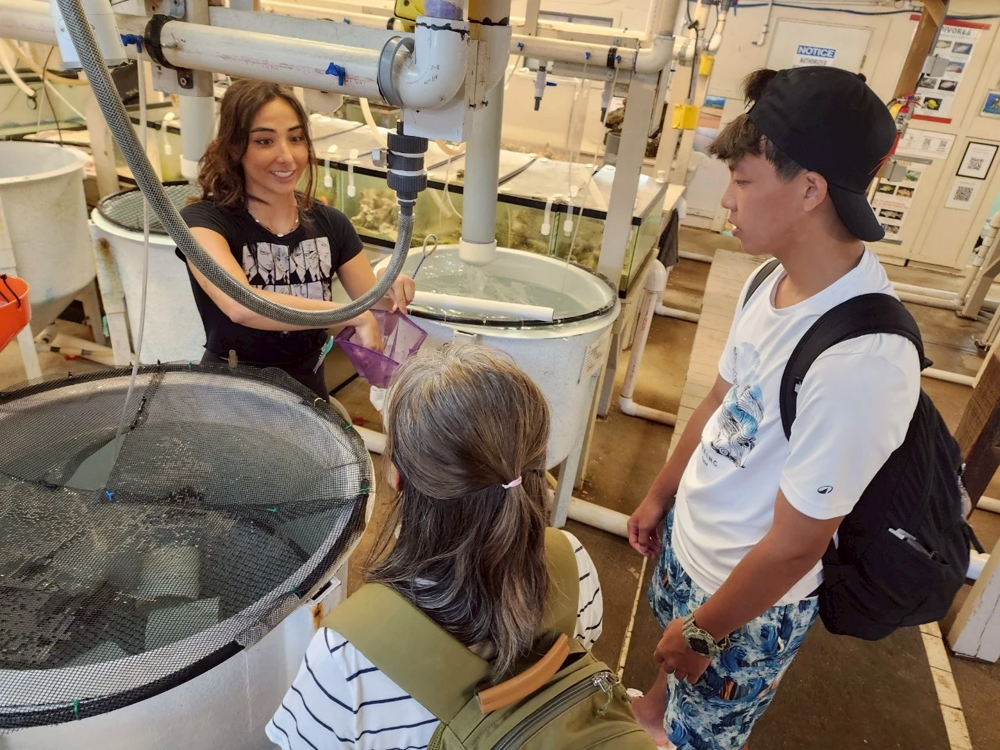
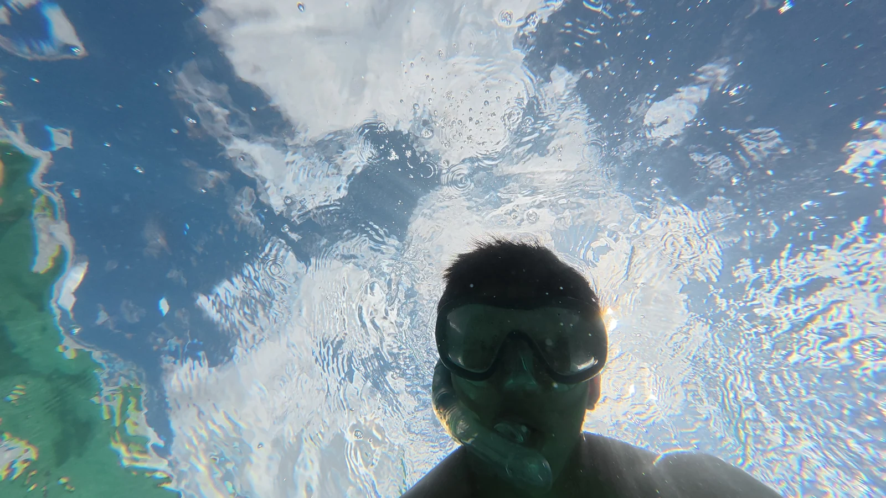
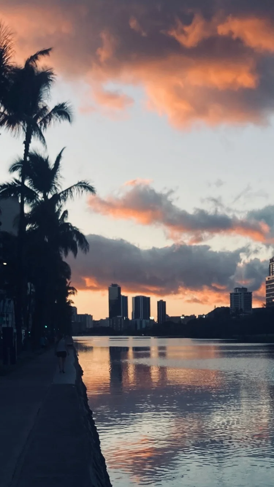
What came home with me
Better questions.
What should we sense?
How should we measure it?
What can we learn from the data?